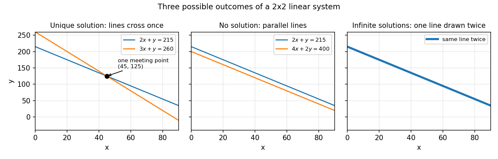

3. Linear systems, determinants, inverses
3.1 What this chapter is for
Most of machine learning is, quietly, the business of solving \(A\mathbf{x} = \mathbf{b}\).
- Fitting a line through data points (Chapter 5) ends in a system of equations — the \(normal\) \(equations\) \((A^T A)\mathbf{x} = A^T\mathbf{b}\).
- A neural network layer computes \(\mathbf{y} = W\mathbf{x} + \mathbf{b}\); asking “which input produced this output?” is solving a linear system.
- Every optimizer step solves (approximately) a linear system built from derivatives.
So this chapter answers three questions about \(A\mathbf{x} = \mathbf{b}\): does a solution exist, is it unique, and how do we compute it? The tools are \(Gaussian\) \(elimination\) (the practical workhorse), the \(matrix\) \(inverse\) (the clean way to think about the answer), and the \(determinant\) (the one number that detects whether an inverse exists).
3.2 Linear equations and systems of linear equations
Def. A \(linear\) \(equation\) in the \(variables\) (or \(unknowns\)) \(x_1, x_2, \dots, x_n\) = an equation of the form
\[a_1 x_1 + a_2 x_2 + \cdots + a_n x_n = b,\]
where the \(coefficients\) \(a_1, a_2, \dots, a_n\) and the right-hand side \(b\) are real numbers.
- \(2x + 3y + 5z = -9\) is linear: the variables are \(x, y, z\) and the coefficients are \(2, 3, 5\).
- \(x^2 + y = 1\) is not linear (the \(x^2\) breaks it); \(xy = 4\) is not linear (a product of two variables breaks it).
Def. A \(system\) \(of\) \(linear\) \(equations\) = a collection of one or more linear equations involving the same set of variables.
Def. A \(solution\) = an assignment of values to the variables that makes every equation in the system true at the same time.
eg. Consider \[x + 2y + z = 8, \qquad 2x + y + z = 7, \qquad x + y + 2z = 9.\] Claim: \((x, y, z) = (1, 2, 3)\) is a solution. Check each equation: - \(1 + 2(2) + 3 = 1 + 4 + 3 = 8\) ✓ - \(2(1) + 2 + 3 = 2 + 2 + 3 = 7\) ✓ - \(1 + 2 + 2(3) = 1 + 2 + 6 = 9\) ✓
All three hold simultaneously, so \((1, 2, 3)\) is indeed a solution.
The general shape — \(m\) equations in \(n\) unknowns — is:
\[\begin{aligned} a_{11}x_1 + a_{12}x_2 + \cdots + a_{1n}x_n &= b_1 \\ a_{21}x_1 + a_{22}x_2 + \cdots + a_{2n}x_n &= b_2 \\ &\ \vdots \\ a_{m1}x_1 + a_{m2}x_2 + \cdots + a_{mn}x_n &= b_m \end{aligned}\]
Basically, … A linear equation is a flat recipe: each variable appears plain, multiplied by one number, everything added up — no squares, no products of variables. A system is several such recipes that must all balance at once, and a solution is one set of values that balances every one of them.
3.3 The matrix form \(A\mathbf{x} = \mathbf{b}\), and the three possible outcomes
Writing the general system above with matrices compresses it to one line.
Def. The \(matrix\) \(form\) of a linear system is \(A\mathbf{x} = \mathbf{b}\), where:
- \(A\) is the \(m \times n\) \(coefficient\) \(matrix\) (the \(a_{ij}\) arranged in a table),
- \(\mathbf{x} = (x_1, \dots, x_n)^T\) is the column vector of unknowns,
- \(\mathbf{b} = (b_1, \dots, b_m)^T\) is the column vector of right-hand sides.
eg. The system of §3.2 in matrix form:
\[\begin{pmatrix} 1 & 2 & 1 \\ 2 & 1 & 1 \\ 1 & 1 & 2 \end{pmatrix} \begin{pmatrix} x \\ y \\ z \end{pmatrix} = \begin{pmatrix} 8 \\ 7 \\ 9 \end{pmatrix},\]
so \(A = \begin{pmatrix} 1 & 2 & 1 \\ 2 & 1 & 1 \\ 1 & 1 & 2 \end{pmatrix}\) (\(3 \times 3\)), \(\mathbf{x} = (x, y, z)^T\), \(\mathbf{b} = (8, 7, 9)^T\).
Def. The \(augmented\) \(matrix\), written \([A \mid \mathbf{b}]\), = the coefficient matrix with \(\mathbf{b}\) glued on as one extra last column. It carries the whole system in one table.
Now recall the columns view from §2.10: if \(\mathbf{a}_1, \dots, \mathbf{a}_n\) are the columns of \(A\), then
\[A\mathbf{x} = x_1\mathbf{a}_1 + x_2\mathbf{a}_2 + \cdots + x_n\mathbf{a}_n.\]
So solving \(A\mathbf{x} = \mathbf{b}\) is asking: “which recipe of the columns of \(A\) makes \(\mathbf{b}\)?” The unknowns \(x_i\) are the amounts of each column-ingredient.
There are exactly three possible answers to that question:
- a \(unique\) \(solution\) — exactly one recipe works;
- \(no\) \(solution\) — no recipe can make \(\mathbf{b}\) (the system is \(inconsistent\));
- \(infinitely\) \(many\) \(solutions\) — whole families of recipes work.
eg (unique solution). \[\begin{aligned} 2x + y &= 215 \\ 3x + y &= 260 \end{aligned}\] Subtract the first equation from the second: \((3x + y) - (2x + y) = 260 - 215\), so \(x = 45\). Then \(y = 215 - 2(45) = 215 - 90 = 125\). Check: \(3(45) + 125 = 135 + 125 = 260\) ✓. One solution: \((45, 125)\).
eg (infinitely many solutions). \[\begin{aligned} 2x + y &= 215 \\ 4x + 2y &= 430 \end{aligned}\] The second equation is just twice the first (\(2 \times (2x + y) = 2 \times 215\)). It adds no new information: every \((x, y)\) on the line \(y = 215 - 2x\) satisfies both. E.g. \(x = 100\) gives \(y = 15\), and \(4(100) + 2(15) = 430\) ✓.
eg (no solution). \[\begin{aligned} 2x + y &= 215 \\ 4x + 2y &= 400 \end{aligned}\] Twice the first equation demands \(4x + 2y = 430\), but the second demands \(4x + 2y = 400\). Both cannot hold: \(430 \ne 400\). No \((x, y)\) satisfies both.
The geometry: with two variables, each equation is a line in \(\mathbb{R}^2\), so two equations = two lines. The three cases are exactly the three ways two lines can relate:

With three variables each equation is a plane in \(\mathbb{R}^3\); the same three outcomes occur (intersecting at one point / the same plane twice / parallel planes).
Basically, … Two equations in two unknowns = two lines drawn on paper. Either they cross at exactly one point (one answer), they are the same line drawn twice (infinite answers — every point on it), or they run parallel forever and never meet (no answer). All the machinery in this chapter is just a reliable way to decide which of these three you are looking at, and to find the point — or points — when they exist.
3.4 Elementary row operations and echelon forms
The strategy for solving: reshape the augmented matrix into a simpler system with the same solutions, using moves that never change the solution set.
Def. The three \(elementary\) \(row\) \(operations\) on a matrix are:
- \(R_i \leftrightarrow R_j\): interchange two rows (reorder two equations — harmless).
- \(R_i \leftarrow cR_i\) with \(c \ne 0\): multiply a row by a nonzero constant (scale both sides of an equation — harmless).
- \(R_i \leftarrow R_i + cR_j\): add a multiple of one row to another (combine two equations — harmless).
Applying any of these to \([A \mid \mathbf{b}]\) leaves the solution set of \(A\mathbf{x} = \mathbf{b}\) unchanged.
The target shape is a staircase.
Def. A matrix is in \(row\) \(echelon\) \(form\) (\(REF\)) if:
- the first nonzero entry of each nonzero row (its \(leading\) \(entry\) or \(pivot\)) sits in a column strictly to the right of the leading entry of the row above;
- all-zero rows, if any, sit at the bottom.
It is in \(reduced\) \(row\) \(echelon\) \(form\) (\(RREF\)) if, in addition:
- every leading entry equals \(1\);
- each leading \(1\) is the only nonzero entry in its column.
eg. \[A_{\text{ref}} = \begin{pmatrix} 1 & 2 & 3 & 4 \\ 0 & 0 & 1 & 3 \\ 0 & 0 & 0 & 1 \end{pmatrix}\] is in REF: leading entries at columns 1, 3, 4 form a staircase. It is not RREF: the leading \(1\) in column 3 has a \(3\) above it.
\[A_{\text{rref}} = \begin{pmatrix} 1 & 2 & 0 & 0 \\ 0 & 0 & 1 & 0 \\ 0 & 0 & 0 & 1 \end{pmatrix}\] is in RREF: leading \(1\)s at columns 1, 3, 4, each alone in its column.
\[\begin{pmatrix} 0 & 1 & 2 \\ 1 & 0 & 3 \end{pmatrix}\] is not even REF: the staircase runs the wrong way (row 1 leads in column 2, row 2 in column 1).
Note: the source slides bundle conditions (i)–(iv) into a single “(Reduced)Row echelon form” definition, requiring leading entries to be \(1\) from the start. This chapter uses the standard split: REF = staircase only, RREF = staircase + clean leading \(1\)s.
Basically, … Echelon form is “stairs of equations”: each equation starts further right than the one above, and dead all-zero rows get swept to the bottom. Reduced means the stairs are extra tidy — every step starts with a clean \(1\) and nothing else in its column. Once the system looks like stairs, the answers are easy to read off.
3.5 Gaussian elimination and back-substitution
Def. \(Gaussian\) \(elimination\) = the procedure:
- Form the augmented matrix \([A \mid \mathbf{b}]\).
- Apply elementary row operations until the left block is in (reduced) row echelon form: \([A \mid \mathbf{b}] \to [R \mid \mathbf{c}]\).
- Solve \(R\mathbf{x} = \mathbf{c}\) — its solutions are exactly the solutions of \(A\mathbf{x} = \mathbf{b}\).
Reading the answer off \([R \mid \mathbf{c}]\):
- If some row reads \(0 = c_i\) with \(c_i \ne 0\) (a zero row of \(R\) paired with a nonzero entry of \(\mathbf{c}\)), the system has no solution — that row demands \(0 = c_i\), impossible.
- Otherwise: a variable \(x_i\) is \(dependent\) if its column contains a leading \(1\), and \(independent\) (\(free\)) if not. Give each independent variable any value you like; then each dependent variable is forced by the unique row in which it leads. Every solution arises this way.
eg (full \(3 \times 3\) elimination). Solve \[\begin{aligned} 2x + y - z &= 1 \\ x + y + z &= 6 \\ 3x - y + z &= 4. \end{aligned}\]
Step 1 — augmented matrix: \[\left[\begin{array}{rrr|r} 2 & 1 & -1 & 1 \\ 1 & 1 & 1 & 6 \\ 3 & -1 & 1 & 4 \end{array}\right]\]
Step 2 — \(R_1 \leftrightarrow R_2\) (get a \(1\) in the top-left): \[\left[\begin{array}{rrr|r} 1 & 1 & 1 & 6 \\ 2 & 1 & -1 & 1 \\ 3 & -1 & 1 & 4 \end{array}\right]\]
Step 3 — \(R_2 \leftarrow R_2 - 2R_1\): \([2-2,\ 1-2,\ -1-2 \mid 1-12] = [0,\ -1,\ -3 \mid -11]\): \[\left[\begin{array}{rrr|r} 1 & 1 & 1 & 6 \\ 0 & -1 & -3 & -11 \\ 3 & -1 & 1 & 4 \end{array}\right]\]
Step 4 — \(R_3 \leftarrow R_3 - 3R_1\): \([3-3,\ -1-3,\ 1-3 \mid 4-18] = [0,\ -4,\ -2 \mid -14]\): \[\left[\begin{array}{rrr|r} 1 & 1 & 1 & 6 \\ 0 & -1 & -3 & -11 \\ 0 & -4 & -2 & -14 \end{array}\right]\]
Step 5 — \(R_2 \leftarrow -R_2\) (leading \(1\) in row 2): \[\left[\begin{array}{rrr|r} 1 & 1 & 1 & 6 \\ 0 & 1 & 3 & 11 \\ 0 & -4 & -2 & -14 \end{array}\right]\]
Step 6 — \(R_3 \leftarrow R_3 + 4R_2\): \([0,\ -4+4,\ -2+12 \mid -14+44] = [0,\ 0,\ 10 \mid 30]\): \[\left[\begin{array}{rrr|r} 1 & 1 & 1 & 6 \\ 0 & 1 & 3 & 11 \\ 0 & 0 & 10 & 30 \end{array}\right] \quad \text{(row echelon form)}\]
Step 7 — \(R_3 \leftarrow R_3/10\): \(z = 3\).
Step 8 — \(back\)-\(substitution\) (solve bottom-up). From row 2: \(y + 3z = 11\), so \(y = 11 - 3(3) = 11 - 9 = 2\). From row 1: \(x + y + z = 6\), so \(x = 6 - 2 - 3 = 1\).
Solution: \((x, y, z) = (1, 2, 3)\). Verify: \(2(1) + 2 - 3 = 1\) ✓; \(1 + 2 + 3 = 6\) ✓; \(3(1) - 2 + 3 = 4\) ✓.
eg (reading RREF: infinitely many solutions). \[\left[\begin{array}{rrr|r} 1 & 0 & 2 & 5 \\ 0 & 1 & -1 & 3 \end{array}\right]\] reads \(x + 2z = 5\), \(y - z = 3\). Leading \(1\)s sit in columns 1 and 2, so \(x, y\) are dependent; column 3 has none, so \(z\) is independent. Set \(z = t\) (any real number): then \(x = 5 - 2t\), \(y = 3 + t\). Infinitely many solutions, one per value of \(t\). Check \(t = 0\): \((5, 3, 0)\) gives \(5 + 0 = 5\) ✓ and \(3 - 0 = 3\) ✓.
eg (reading RREF: no solution). \[\left[\begin{array}{rr|r} 1 & 2 & 4 \\ 0 & 0 & 7 \end{array}\right]\] reads \(x + 2y = 4\) and \(0 = 7\). The second row is impossible, so the system has no solution.
Basically, … Gaussian elimination is “tidy the equations, then read the answers.” You combine and scale equations until they form stairs; the bottom stair tells you the last variable, and you climb back up substituting. If a stair ever says \(0 = 7\), there is no answer; if some variable never gets a stair of its own, it is free and you get infinitely many answers.
3.6 The matrix inverse
Recall §1.10: a one-one function \(f\) has an inverse \(f^{-1}\) that undoes it — \(f^{-1}(f(x)) = x\). A (square) matrix is a machine that transforms vectors; its inverse, when it exists, is the machine that reverses the transformation.
Def. Let \(A\) be an \(n \times n\) matrix. Its \(inverse\), written \(A^{-1}\), = the \(n \times n\) matrix satisfying
\[AA^{-1} = A^{-1}A = I.\]
Only square matrices can have inverses, and not every square matrix does.
For \(2 \times 2\) matrices there is a direct formula. With \(\det(A) = ad - bc\):
\[A = \begin{pmatrix} a & b \\ c & d \end{pmatrix}, \qquad A^{-1} = \frac{1}{ad - bc}\begin{pmatrix} d & -b \\ -c & a \end{pmatrix} \quad \text{provided } ad - bc \ne 0.\]
Mnemonic: swap the diagonal entries, flip the signs of the off-diagonal entries, divide everything by the determinant.
eg. \(A = \begin{pmatrix} 2 & 1 \\ 1 & 1 \end{pmatrix}\). \(\det(A) = 2(1) - 1(1) = 1 \ne 0\), so \[A^{-1} = \frac{1}{1}\begin{pmatrix} 1 & -1 \\ -1 & 2 \end{pmatrix} = \begin{pmatrix} 1 & -1 \\ -1 & 2 \end{pmatrix}.\] Verify \(AA^{-1} = I\): \[\begin{pmatrix} 2 & 1 \\ 1 & 1 \end{pmatrix} \begin{pmatrix} 1 & -1 \\ -1 & 2 \end{pmatrix} = \begin{pmatrix} 2(1)+1(-1) & 2(-1)+1(2) \\ 1(1)+1(-1) & 1(-1)+1(2) \end{pmatrix} = \begin{pmatrix} 1 & 0 \\ 0 & 1 \end{pmatrix}.\] ✓ The undo machine works.
If \(A^{-1}\) exists, solving \(A\mathbf{x} = \mathbf{b}\) is one step: multiply both sides on the left by \(A^{-1}\):
\[A\mathbf{x} = \mathbf{b} \quad\Rightarrow\quad \mathbf{x} = A^{-1}\mathbf{b}.\]
Note (one honest line): forming \(A^{-1}\) costs roughly three times the arithmetic of plain elimination and rounds worse, so nobody solves \(A\mathbf{x} = \mathbf{b}\) by inverting in practice — elimination (and fancier factorizations) is the workhorse; the inverse is the clean way to think about the solution.
When does the inverse fail to exist? A matrix with no inverse is called \(singular\). Preview of §3.7: \(A\) is singular exactly when \(\det(A) = 0\).
eg (singular matrix). \(S = \begin{pmatrix} 2 & 4 \\ 1 & 2 \end{pmatrix}\) has \(\det(S) = 2(2) - 4(1) = 0\) — no inverse exists. Notice why: row 1 is \(2 \times\) row 2, so the two rows carry the same information; \(S\) squashes distinct vectors together and cannot be undone.
Two facts worth filing: \(\det(A^{-1}) = \dfrac{1}{\det(A)}\), and for larger matrices \(A^{-1}\) is found by row-reducing \([A \mid I]\) to \([I \mid A^{-1}]\) — elimination again, solving \(A\mathbf{x} = \mathbf{e}_i\) for each column.
Note (\(homogeneous\) \(systems\)): \(A\mathbf{x} = \mathbf{0}\) always has the \(trivial\) \(solution\) \(\mathbf{x} = \mathbf{0}\). If \(A\) is invertible it is the only solution (\(\mathbf{x} = A^{-1}\mathbf{0} = \mathbf{0}\)); if \(\det(A) = 0\) there are infinitely many others. And if there are more unknowns than equations, a nonzero solution is guaranteed.
Basically, … The inverse is the “undo button” for a matrix: whatever \(A\) does to a vector, \(A^{-1}\) reverses. Just like functions in §1.10, undoing only works when nothing got merged — a matrix that squashes two different vectors into one (determinant zero) cannot be undone, so it has no inverse.
3.7 Determinants
Def. The \(determinant\) of a square matrix \(A\), written \(\det(A)\) or \(|A|\), = a single number computed from the entries of \(A\). Only square matrices have determinants. It is the test for invertibility (\(\det(A) \ne 0 \Leftrightarrow A\) invertible) and appears in solution formulas.
\(1 \times 1\): \(\det([a]) = a\).
\(2 \times 2\): \[\det\begin{pmatrix} a & b \\ c & d \end{pmatrix} = ad - bc.\]
eg. \(\det\begin{pmatrix} 2 & 3 \\ 6 & 10 \end{pmatrix} = 2(10) - 3(6) = 20 - 18 = 2.\)
For \(3 \times 3\) and beyond, the determinant is built recursively. The \((i, j)\)-th \(minor\) \(M_{ij}\) = the determinant of the submatrix left after deleting row \(i\) and column \(j\); the \((i, j)\)-th \(cofactor\) is \(C_{ij} = (-1)^{i+j}M_{ij}\) (the sign follows a checkerboard: \(\begin{smallmatrix} + & - & + \\ - & + & - \\ + & - & + \end{smallmatrix}\)). Expanding along the first row:
\[\det(A) = a_{11}C_{11} + a_{12}C_{12} + a_{13}C_{13}.\]
In fact you may expand along any row or column — pick the one with the most zeros.
eg (\(3 \times 3\), full steps). \(A = \begin{pmatrix} 2 & 4 & 1 \\ 3 & 8 & 7 \\ 5 & 6 & 9 \end{pmatrix}\), expanding along row 1:
\[\begin{aligned} \det(A) &= 2\det\begin{pmatrix} 8 & 7 \\ 6 & 9 \end{pmatrix} - 4\det\begin{pmatrix} 3 & 7 \\ 5 & 9 \end{pmatrix} + 1\det\begin{pmatrix} 3 & 8 \\ 5 & 6 \end{pmatrix} \\ &= 2(72 - 42) - 4(27 - 35) + (18 - 40) \\ &= 2(30) - 4(-8) + (-22) \\ &= 60 + 32 - 22 = 70. \end{aligned}\]
eg (\(triangular\) shortcut). For an upper (or lower) triangular matrix the determinant is just the product of the diagonal entries: \[\det\begin{pmatrix} 2 & 4 & 3 \\ 0 & 8 & 7 \\ 0 & 0 & 9 \end{pmatrix} = 2 \cdot 8 \cdot 9 = 144.\]
Geometric meaning (one paragraph): \(|\det(A)|\) is the factor by which the linear map \(\mathbf{x} \mapsto A\mathbf{x}\) scales areas (\(2 \times 2\)) or volumes (\(3 \times 3\)) — the unit square becomes a parallelogram of area \(|\det(A)|\), the unit cube a parallelepiped of volume \(|\det(A)|\). The sign records \(orientation\): \(\det(A) > 0\) preserves it, \(\det(A) < 0\) flips it (a mirror). \(\det(A) = 0\) means the map flattens space — area collapses to zero — which is exactly why a singular matrix cannot be undone.
eg. \(A = \begin{pmatrix} 2 & 0 \\ 0 & 2 \end{pmatrix}\) has \(\det(A) = 4\): it doubles every length, so the unit square (area \(1\)) becomes a \(2 \times 2\) square (area \(4\)).
Basically, … The determinant is one number that says “how much does this matrix stretch space?” A determinant of \(4\) means every area becomes \(4\) times bigger; a determinant of \(0\) means the matrix flattens everything into something with no area at all — which is exactly why such a matrix can’t be undone.
The properties we will reuse later:
- \(\det(AB) = \det(A)\det(B)\) — determinants multiply across products.
- \(\det(A^T) = \det(A)\) — transposing changes nothing.
- \(\det(I) = 1\) and \(\det(A^{-1}) = \dfrac{1}{\det(A)}\).
- Swapping two rows (or two columns) flips the sign.
- Adding a multiple of one row to another leaves the determinant unchanged.
- Multiplying a row by \(t\) multiplies the determinant by \(t\).
- A zero row or column, two identical rows, or one row that is a combination of the others gives \(\det = 0\).
- Determinants can be computed by row reduction: reduce to triangular form, tracking how each operation changed the value:
| Operation | Effect on \(\det\) |
|---|---|
| \(R_i \leftrightarrow R_j\) (swap) | sign flips |
| \(R_i \leftarrow cR_i\) (scale) | multiplied by \(c\) |
| \(R_i \leftarrow R_i + cR_j\) (add multiple) | unchanged |
eg. \(\det\begin{pmatrix} 1 & 2 \\ 3 & 4 \end{pmatrix}\) via row reduction: \(R_2 \leftarrow R_2 - 3R_1\) (type 3, det unchanged) gives \(\begin{pmatrix} 1 & 2 \\ 0 & -2 \end{pmatrix}\), triangular, so \(\det = 1 \cdot (-2) = -2\). Direct check: \(1(4) - 2(3) = -2\) ✓.
3.8 Cramer’s rule
When \(A\) is invertible (\(\det(A) \ne 0\)), each unknown has a closed-form expression in determinants. Let \(A_i\) be the matrix formed by replacing column \(i\) of \(A\) with \(\mathbf{b}\). Then:
\[x_i = \frac{\det(A_i)}{\det(A)} \qquad i = 1, \dots, n.\]
This is \(Cramer's\) \(rule\). It needs \(\det(A) \ne 0\) (division by zero is not allowed), and it is mostly a theoretical tool: each \(x_i\) costs a full determinant, so for large systems it is far more work than elimination.
eg. Solve \(2x + y = 7\), \(x + 3y = 11\). \(A = \begin{pmatrix} 2 & 1 \\ 1 & 3 \end{pmatrix}\), \(\det(A) = 2(3) - 1(1) = 5\). \(A_1 = \begin{pmatrix} 7 & 1 \\ 11 & 3 \end{pmatrix}\) (column 1 replaced by \(\mathbf{b}\)): \(\det(A_1) = 7(3) - 1(11) = 21 - 11 = 10\), so \(x = 10/5 = 2\). \(A_2 = \begin{pmatrix} 2 & 7 \\ 1 & 11 \end{pmatrix}\) (column 2 replaced by \(\mathbf{b}\)): \(\det(A_2) = 2(11) - 7(1) = 22 - 7 = 15\), so \(y = 15/5 = 3\). Check: \(2(2) + 3 = 7\) ✓; \(2 + 3(3) = 11\) ✓.
Basically, … Cramer’s rule solves the system with pure determinants: each variable is a ratio of two determinants — swap in the answer column, take the determinant, divide. Elegant on paper, impractical at scale: it needs \(n + 1\) determinants, each of which is itself expensive to compute.
3.9 Worked example set
eg 1 — \(3 \times 3\) determinant by cofactor expansion. Compute \(\det(A)\) for \(A = \begin{pmatrix} 2 & 4 & 1 \\ 3 & 8 & 7 \\ 5 & 6 & 9 \end{pmatrix}\).
Step 1: Expand along row 1 (signs \(+\), \(-\), \(+\)): \[\det(A) = 2 \cdot M_{11} - 4 \cdot M_{12} + 1 \cdot M_{13}.\]
Step 2: Minors (delete the row and column of each entry): - \(M_{11} = \det\begin{pmatrix} 8 & 7 \\ 6 & 9 \end{pmatrix} = 8(9) - 7(6) = 72 - 42 = 30\). - \(M_{12} = \det\begin{pmatrix} 3 & 7 \\ 5 & 9 \end{pmatrix} = 3(9) - 7(5) = 27 - 35 = -8\). - \(M_{13} = \det\begin{pmatrix} 3 & 8 \\ 5 & 6 \end{pmatrix} = 3(6) - 8(5) = 18 - 40 = -22\).
Step 3: Combine: \(\det(A) = 2(30) - 4(-8) + 1(-22) = 60 + 32 - 22 = 70\).
eg 2 — Inverse and \(\mathbf{x} = A^{-1}\mathbf{b}\), full steps. Solve \(\begin{pmatrix} 2 & 1 \\ 1 & 1 \end{pmatrix}\begin{pmatrix} x \\ y \end{pmatrix} = \begin{pmatrix} 5 \\ 3 \end{pmatrix}\) via the inverse.
Step 1: \(\det(A) = 2(1) - 1(1) = 1 \ne 0\), so \(A^{-1}\) exists.
Step 2: \(A^{-1} = \dfrac{1}{1}\begin{pmatrix} 1 & -1 \\ -1 & 2 \end{pmatrix} = \begin{pmatrix} 1 & -1 \\ -1 & 2 \end{pmatrix}\) (swap diagonal, negate off-diagonal).
Step 3: \(\begin{pmatrix} x \\ y \end{pmatrix} = A^{-1}\mathbf{b} = \begin{pmatrix} 1 & -1 \\ -1 & 2 \end{pmatrix}\begin{pmatrix} 5 \\ 3 \end{pmatrix} = \begin{pmatrix} 1(5) + (-1)(3) \\ (-1)(5) + 2(3) \end{pmatrix} = \begin{pmatrix} 2 \\ 1 \end{pmatrix}\).
Step 4: Verify in the original system: \(2(2) + 1 = 5\) ✓; \(2 + 1 = 3\) ✓.
eg 3 — Reading infinitely many solutions from RREF. The augmented matrix of a system reduces to \[\left[\begin{array}{rrr|r} 1 & 0 & 2 & 5 \\ 0 & 1 & -1 & 3 \\ 0 & 0 & 0 & 0 \end{array}\right].\]
Step 1: No row reads \(0 = \text{nonzero}\) (the zero row pairs with \(0\)), so solutions exist.
Step 2: Leading \(1\)s are in columns 1 and 2 → \(x, y\) dependent; column 3 → \(z\) independent.
Step 3: Set \(z = t\). The rows read \(x + 2z = 5\) and \(y - z = 3\), so \(x = 5 - 2t\), \(y = 3 + t\).
Step 4: Solution family: \((x, y, z) = (5 - 2t,\ 3 + t,\ t)\) for any \(t \in \mathbb{R}\).
eg 4 — Spotting “no solution” early. Augmented matrix: \[\left[\begin{array}{rr|r} 1 & 2 & 4 \\ 2 & 4 & 10 \end{array}\right].\] \(R_2 \leftarrow R_2 - 2R_1\): \([2-2,\ 4-4 \mid 10-8] = [0,\ 0 \mid 2]\). The second row reads \(0 = 2\) — impossible. No solution. (Geometrically: \(x + 2y = 4\) and \(x + 2y = 5\) are parallel lines.)
eg 5 — A singular system has no inverse to save it. \(A = \begin{pmatrix} 3 & 6 \\ 1 & 2 \end{pmatrix}\), \(\mathbf{b} = \begin{pmatrix} 9 \\ 4 \end{pmatrix}\).
Step 1: \(\det(A) = 3(2) - 6(1) = 0\). Singular: no inverse, and neither \(\mathbf{x} = A^{-1}\mathbf{b}\) nor Cramer’s rule applies.
Step 2: Eliminate anyway: \(R_2 \leftarrow 3R_2 - R_1\) gives \([3-3,\ 6-6 \mid 12-9] = [0,\ 0 \mid 3]\), i.e. \(0 = 3\). No solution.
Step 3: Moral: \(\det(A) = 0\) does not automatically mean “no solution” — with \(\mathbf{b} = (9, 3)^T\) the same \(A\) would give \(0 = 0\) and infinitely many solutions. Zero determinant means “elimination must decide”; the inverse simply does not exist to decide it.
3.10 Problem set
Full worked solutions are in the companion solutions volume (solutions/03-linear-systems-determinants-inverses.md).
- Write the system \(3x + 2y = 12\), \(x - y = 1\) in the form \(A\mathbf{x} = \mathbf{b}\) (state \(A\), \(\mathbf{x}\), \(\mathbf{b}\)) and give its augmented matrix \([A \mid \mathbf{b}]\).
- Solve by Gaussian elimination, showing every row operation: \[x + y + z = 5, \qquad 2x - y + 3z = 17, \qquad x + 2y - z = -4.\]
- For each system, say whether it has a unique solution, no solution, or infinitely many solutions — and give the solution(s):
- \(x + 2y = 4\), \(3x + 6y = 12\);
- \(x + 2y = 4\), \(3x + 6y = 10\);
- \(x + 2y = 4\), \(x - y = 1\).
- Let \(A = \begin{pmatrix} 3 & 1 \\ 2 & 1 \end{pmatrix}\).
- Compute \(A^{-1}\) using the \(2 \times 2\) formula, and verify \(AA^{-1} = I\).
- Use it to solve \(A\begin{pmatrix} x \\ y \end{pmatrix} = \begin{pmatrix} 5 \\ 3 \end{pmatrix}\).
- Explain in two lines why \(A = \begin{pmatrix} 2 & 4 \\ 1 & 2 \end{pmatrix}\) has no inverse.
- Compute:
- \(\det\begin{pmatrix} 5 & -2 \\ 3 & 4 \end{pmatrix}\);
- \(\det\begin{pmatrix} 1 & 2 & 3 \\ 0 & 4 & 5 \\ 1 & 0 & 6 \end{pmatrix}\) (expand along a row or column of your choice);
- \(\det\begin{pmatrix} 3 & 1 & 2 \\ 0 & -2 & 5 \\ 0 & 0 & 4 \end{pmatrix}\) (use the triangular shortcut).
- If \(A\) is \(3 \times 3\) with \(\det(A) = 5\), what is \(\det(2A)\)? Justify using the row-scaling property.
- Use Cramer’s rule to solve \(2x + y = 7\), \(x + 3y = 11\). (Compare with §3.8.)
- Describe all solutions of the homogeneous system \(x + 2y = 0\), \(3x + 6y = 0\). Why must there be infinitely many?
- True or false, with a one-line reason:
- A matrix with a zero row has determinant \(0\).
- If \(\det(A) \ne 0\) then \(A\mathbf{x} = \mathbf{b}\) has exactly one solution.
- Swapping two rows of a matrix changes the sign of its determinant.
- \(\det(A + B) = \det(A) + \det(B)\) for all square \(A, B\).
- The RREF of an augmented matrix is \(\left[\begin{array}{rrr|r} 1 & 2 & 0 & 4 \\ 0 & 0 & 1 & 3 \end{array}\right]\). Identify the dependent and independent variables and write down all solutions.
3.11 Where this goes next
- Chapter 4 (vector spaces): “When does \(A\mathbf{x} = \mathbf{b}\) have solutions?” gets its proper answer: \(\mathbf{b}\) must lie in the \(span\) of the columns of \(A\) (the \(column\) \(space\)), and the solutions of \(A\mathbf{x} = \mathbf{0}\) form the \(null\) \(space\). Unique / none / infinite stops being a list and becomes geometry.
- Chapter 5 (least squares): real data gives a tall \(A\) (more equations than unknowns) — no inverse exists, and usually no exact solution either. The best-fit answer solves the \(normal\) \(equations\) \((A^T A)\mathbf{x} = A^T\mathbf{b}\), where the inverse (of \(A^T A\)) finally earns its keep.
- Determinants return later with change-of-variables: when a transformation stretches space, probability densities must be reweighted by exactly \(|\det|\) — the scaling factor of §3.7 doing real work.
Solutions
Attempt each problem first, then click a problem to reveal its worked solution.
1. The unknowns are \(x, y\); the coefficient table and right-hand side are read straight off the equations:
\[A = \begin{pmatrix} 3 & 2 \\ 1 & -1 \end{pmatrix}, \qquad \mathbf{x} = \begin{pmatrix} x \\ y \end{pmatrix}, \qquad \mathbf{b} = \begin{pmatrix} 12 \\ 1 \end{pmatrix},\]
so \(A\mathbf{x} = \mathbf{b}\) is \(\begin{pmatrix} 3 & 2 \\ 1 & -1 \end{pmatrix}\begin{pmatrix} x \\ y \end{pmatrix} = \begin{pmatrix} 12 \\ 1 \end{pmatrix}\). The augmented matrix glues \(\mathbf{b}\) on as a last column:
\[[A \mid \mathbf{b}] = \left[\begin{array}{rr|r} 3 & 2 & 12 \\ 1 & -1 & 1 \end{array}\right].\]
2. Augmented matrix: \[\left[\begin{array}{rrr|r} 1 & 1 & 1 & 5 \\ 2 & -1 & 3 & 17 \\ 1 & 2 & -1 & -4 \end{array}\right]\]
Step 1 — \(R_2 \leftarrow R_2 - 2R_1\): \([2-2,\ -1-2,\ 3-2 \mid 17-10] = [0,\ -3,\ 1 \mid 7]\).
Step 2 — \(R_3 \leftarrow R_3 - R_1\): \([1-1,\ 2-1,\ -1-1 \mid -4-5] = [0,\ 1,\ -2 \mid -9]\).
\[\left[\begin{array}{rrr|r} 1 & 1 & 1 & 5 \\ 0 & -3 & 1 & 7 \\ 0 & 1 & -2 & -9 \end{array}\right]\]
Step 3 — \(R_2 \leftrightarrow R_3\) (nicer pivot):
\[\left[\begin{array}{rrr|r} 1 & 1 & 1 & 5 \\ 0 & 1 & -2 & -9 \\ 0 & -3 & 1 & 7 \end{array}\right]\]
Step 4 — \(R_3 \leftarrow R_3 + 3R_2\): \([0,\ -3+3,\ 1-6 \mid 7-27] = [0,\ 0,\ -5 \mid -20]\), so \(-5z = -20\) and \(z = 4\).
Step 5 — back-substitution. Row 2: \(y - 2z = -9\), so \(y = -9 + 2(4) = -1\). Row 1: \(x + y + z = 5\), so \(x = 5 - (-1) - 4 = 2\).
Solution: \((x, y, z) = (2, -1, 4)\). Verify: \(2 + (-1) + 4 = 5\) ✓; \(2(2) - (-1) + 3(4) = 4 + 1 + 12 = 17\) ✓; \(2 + 2(-1) - 4 = 2 - 2 - 4 = -4\) ✓.
3. i) Infinitely many. The second equation is \(3 \times\) the first (\(3x + 6y = 3 \cdot 4 = 12\)): one equation in disguise. Solutions: all \((x, y)\) with \(x + 2y = 4\), e.g. \((x, y) = (4 - 2t,\ t)\). Check: \((4-2t) + 2t = 4\) ✓; \(3(4-2t) + 6t = 12\) ✓.
No solution. \(3 \times\) the first equation demands \(3x + 6y = 12\), but the second demands \(3x + 6y = 10\): \(12 \ne 10\), contradiction. (Parallel lines.)
Unique solution. Subtract: \((x + 2y) - (x - y) = 4 - 1\), so \(3y = 3\) and \(y = 1\); then \(x = 1 + y = 2\). Check: \(2 + 2(1) = 4\) ✓; \(2 - 1 = 1\) ✓. Solution: \((2, 1)\).
4. i) \(\det(A) = 3(1) - 1(2) = 1 \ne 0\). By the \(2 \times 2\) formula (swap diagonal, negate off-diagonal, divide by \(\det\)): \[A^{-1} = \frac{1}{1}\begin{pmatrix} 1 & -1 \\ -2 & 3 \end{pmatrix} = \begin{pmatrix} 1 & -1 \\ -2 & 3 \end{pmatrix}.\] Verify: \[AA^{-1} = \begin{pmatrix} 3 & 1 \\ 2 & 1 \end{pmatrix}\begin{pmatrix} 1 & -1 \\ -2 & 3 \end{pmatrix} = \begin{pmatrix} 3-2 & -3+3 \\ 2-2 & -2+3 \end{pmatrix} = \begin{pmatrix} 1 & 0 \\ 0 & 1 \end{pmatrix} = I.\] ✓
- \(\begin{pmatrix} x \\ y \end{pmatrix} = A^{-1}\mathbf{b} = \begin{pmatrix} 1 & -1 \\ -2 & 3 \end{pmatrix}\begin{pmatrix} 5 \\ 3 \end{pmatrix} = \begin{pmatrix} 5 - 3 \\ -10 + 9 \end{pmatrix} = \begin{pmatrix} 2 \\ -1 \end{pmatrix}\). Check: \(3(2) + 1(-1) = 5\) ✓; \(2(2) + 1(-1) = 3\) ✓.
5. \(\det(A) = 2(2) - 4(1) = 4 - 4 = 0\). A matrix has an inverse only if its determinant is nonzero; here it is zero, so \(A\) is singular — no inverse exists. (Equivalently: row 1 is \(2 \times\) row 2, so the rows carry redundant information.)
6. i) \(\det\begin{pmatrix} 5 & -2 \\ 3 & 4 \end{pmatrix} = 5(4) - (-2)(3) = 20 + 6 = 26\).
Expand along row 1 (signs \(+\), \(-\), \(+\)): \[\begin{aligned} \det &= 1\det\begin{pmatrix} 4 & 5 \\ 0 & 6 \end{pmatrix} -2\det\begin{pmatrix} 0 & 5 \\ 1 & 6 \end{pmatrix} +3\det\begin{pmatrix} 0 & 4 \\ 1 & 0 \end{pmatrix} \\ &= 1(24 - 0) - 2(0 - 5) + 3(0 - 4) \\ &= 24 + 10 - 12 = 22. \end{aligned}\]
Upper triangular: determinant = product of the diagonal \(= 3 \cdot (-2) \cdot 4 = -24\).
7. \(\det(2A) = 40\). Reason: \(2A\) scales every row of \(A\) by \(2\); scaling one row by \(t\) scales the determinant by \(t\) (property vi), and there are \(3\) rows, so \(\det(2A) = 2 \cdot 2 \cdot 2 \cdot \det(A) = 8 \cdot 5 = 40\). (In general \(\det(tA) = t^n \det(A)\) for \(n \times n\) \(A\).)
8. \(A = \begin{pmatrix} 2 & 1 \\ 1 & 3 \end{pmatrix}\), \(\mathbf{b} = \begin{pmatrix} 7 \\ 11 \end{pmatrix}\), \(\det(A) = 2(3) - 1(1) = 5 \ne 0\). - \(A_1 = \begin{pmatrix} 7 & 1 \\ 11 & 3 \end{pmatrix}\): \(\det(A_1) = 7(3) - 1(11) = 21 - 11 = 10\), so \(x = 10/5 = 2\). - \(A_2 = \begin{pmatrix} 2 & 7 \\ 1 & 11 \end{pmatrix}\): \(\det(A_2) = 2(11) - 7(1) = 22 - 7 = 15\), so \(y = 15/5 = 3\).
Check: \(2(2) + 3 = 7\) ✓; \(2 + 3(3) = 11\) ✓.
9. From the first equation \(x = -2y\); the second is \(3 \times\) the first, hence redundant. Put \(y = t\) (free): all solutions are \((x, y) = (-2t,\ t)\), \(t \in \mathbb{R}\) — infinitely many. Why infinitely many: \(\det\begin{pmatrix} 1 & 2 \\ 3 & 6 \end{pmatrix} = 6 - 6 = 0\), so the coefficient matrix is singular; a homogeneous system with singular coefficient matrix always has nontrivial solutions beyond \(\mathbf{0}\).
10. i) True — a zero row forces \(\det = 0\) (property vii). ii) True — \(\det(A) \ne 0\) means \(A\) is invertible, and then \(\mathbf{x} = A^{-1}\mathbf{b}\) is the one and only solution. iii) True — swapping two rows flips the sign (property iv). iv) False. Counterexample: \(A = B = I_2\). Then \(\det(A + B) = \det\begin{pmatrix} 2 & 0 \\ 0 & 2 \end{pmatrix} = 4\), but \(\det(A) + \det(B) = 1 + 1 = 2 \ne 4\).
11. The rows read \(x + 2y = 4\) and \(z = 3\). Leading \(1\)s are in columns 1 and 3, so \(x\) and \(z\) are dependent; column 2 has no leading \(1\), so \(y\) is independent. Set \(y = t\): then \(x = 4 - 2t\) and \(z = 3\). All solutions: \((x, y, z) = (4 - 2t,\ t,\ 3)\), \(t \in \mathbb{R}\) — infinitely many.